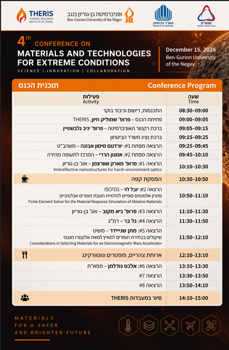

תוכנית הכנסConference Program
פעילותActivity
שעהTime
התכנסות, רישום וכיבוד בוקר08:30–09:00
פתיחת הכנס – פרופ׳ שמוליק חיון, THERIS09:00–09:05
ברכת רקטור האוניברסיטה – פרופ׳ יניב גלשטיין09:05–09:15
ברכת נציג משרד הביטחון09:15–09:25
הרצאת מפתח #1: יורדם סיסון אבונה – משהב״ט09:25–09:45
הרצאת מפתח #2: אמנון הררי – טכניוןהצגת המרכז לתעופה מהירהIntroducing the High-Speed Flight Center09:45–10:10
הרצאה #1: פרופ' מארק שוורצמן - אונ' בן-גוריוןננו־מבנים מונעי החזרה לאופטיקה בתנאי סביבה קיצונייםAntireflective nanostructures for harsh-environment optics10:10–10:30
הפסקת קפה10:30–10:50
הרצאה #2: גלי בר - ממ"גדבק שקוף אופטית ועמיד לקרינה ליישומים מתקדמיםOptically
Transparent, Radiation-Tolerant Adhesive for Advanced Applications10:50–11:10
Transparent, Radiation-Tolerant Adhesive for Advanced Applications10:50–11:10
הרצאה #3: פרופ' גיא מקוב - אונ' בן-גוריוןמבחירת חומרים לתיכון חומריםFrom Materials Selection to Materials Design11:10–11:30
הרצאה #4: יובל לוי - ISCFDSפתרון אלמנטים סופיים להדמיית תגובת חומרים אבלטיבייםFinite
Element Solver for the Material Response Simulation of Ablative Materials11:30–11:50
Element Solver for the Material Response Simulation of Ablative Materials11:30–11:50
הרצאה #5: מתן שניידר– מון-שוטשיקולים בבחירת חומרים למאיץ למסה אלקטרומגנטיConsiderations in Selecting Materials for an Electromagnetic Mass Accelerator11:50–12:10
ארוחת צהריים, פוסטרים ונטוורקינג12:10–13:10
הרצאה #6: קיריל וולצ׳ק (CEO, OQTON) וולנטין נוב (CEO, NOVAKRON)Physical AI בייצור מתקדם: האצת הדרך מתכנון המותאם לייצור ועד לחלקים
שעברו הסמכהPhysical
AI in Advanced Manufacturing: Accelerating the Path from Design for
Manufacturing to Certified Parts13:10–13:30
שעברו הסמכהPhysical
AI in Advanced Manufacturing: Accelerating the Path from Design for
Manufacturing to Certified Parts13:10–13:30
הרצאה #7: לב מיסיוק – תעשייה אוויריתחיזוי התנהגות חומרים מרוכבים קרמיים C/C-SiC באמצעות גישת מידול
רב־סקאלית מבוססת מודל חלופיPredicting
the behavior of C/C-SiC CMCs using a surrogate based multiscale modeling
approach13:30–13:50
רב־סקאלית מבוססת מודל חלופיPredicting
the behavior of C/C-SiC CMCs using a surrogate based multiscale modeling
approach13:30–13:50
הרצאה #8: עדן אלעזר – רפאלשיפור ביצועי חומרים מרוכבים בטמפרטורות גבוהות באמצעות שיקוע שכבות אטומיותEnhancing
Composite Materials Performance at Elevated Temperatures Using Atomic Layer
Deposition13:50–14:10
Composite Materials Performance at Elevated Temperatures Using Atomic Layer
Deposition13:50–14:10
סיור במעבדות THERIS14:10–15:00